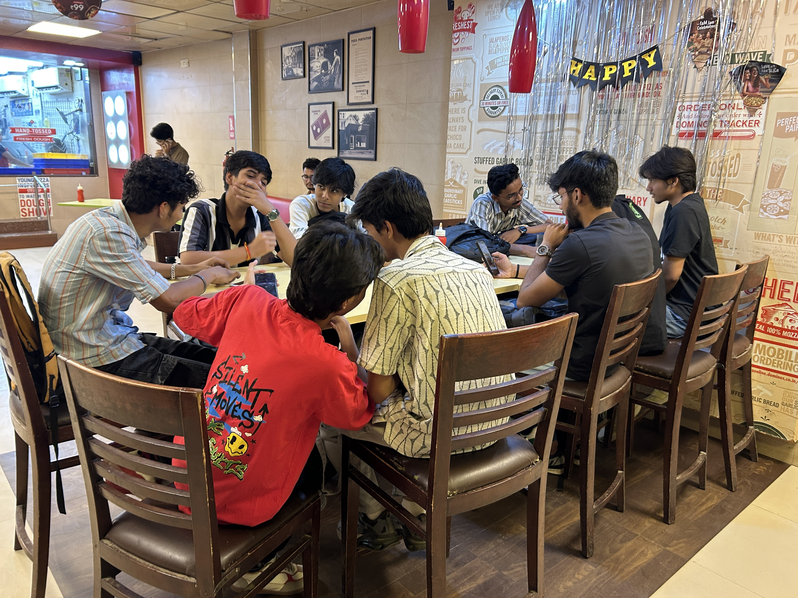
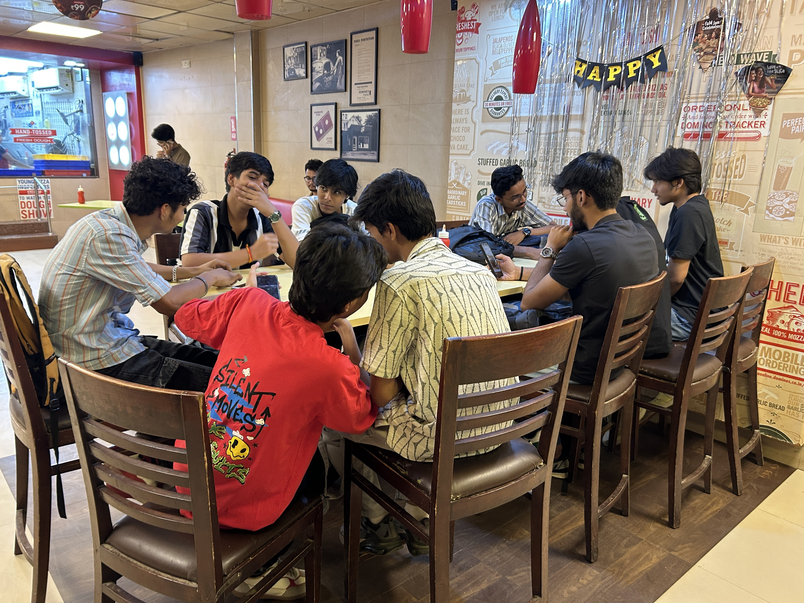

growing up in a small town, i was always into building new stuff — hardware or software.
however, i didn't have access to the same network and resources that some teenagers would have in a tier 1 city, and learning and experimenting with hardware can be a bit expensive.
i was lucky enough to learn a lot of stuff by myself and create awesome projects like coding a fun website for my girlfriend from scratch, or building a game in unity, or maybe experimenting with a 3d printer to make it write my hw.
back then, 13-year-old shreyansh (during covid) promised himself that i won't let that happen to other people in my community. despite getting into what some might call prestigious universities like duke and northwestern, i took a gap year!
now that i am grown up, i have decided, i'll host a fun club meeting/workshop day once every month where i'll invite teenagers like me or under 18. where i'll teach them everything i know about tech, hardware, finance, and startups!
i even did one last month — created a website for the event, sent it to a couple of WhatsApp groups and posted on my r/Jhansi.
and surprisingly, 18 people showed up. out of 14 people were strangers.
many of them were beginners, i taught them how to build their first website and got them live on the internet, coordinated with Hack Club (a nonprofit organization).
here are a few websites they made:
- egg sheeran: https://lnkd.in/gP8UUREX
- digital funhouse: https://lnkd.in/gwyM_d3v
later we took everyone to dominos pizza and got everyone pizza for their hard work!
also this entire event wouldn't be possible without a venue and for that special thanks to Ankit Rajak, RISE - JHANSI, and Mukul Dubey for the finance workshop.
later, after the club meet, we were lucky enough to get featured in hackclub newsletter!
 
